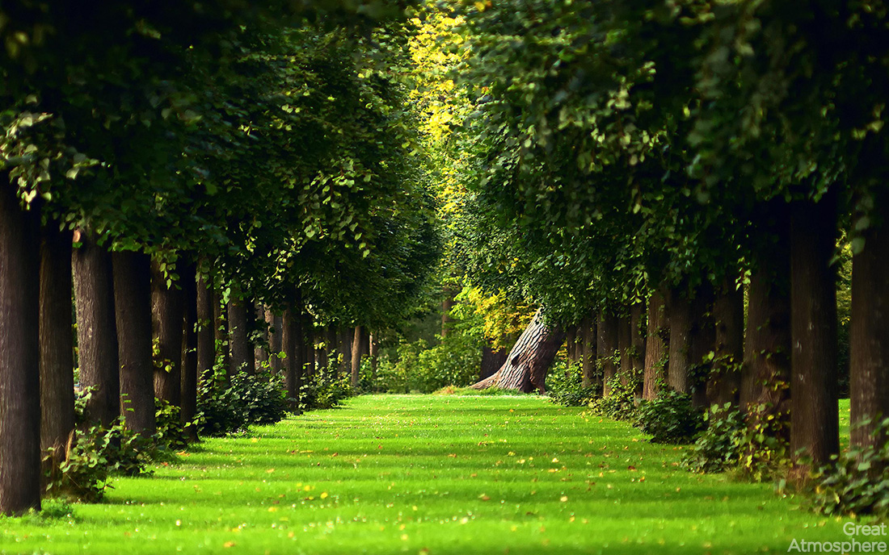

Tri sélectif : le guide du débutant
Imaginez : en équipant simplement vos robinets d'économiseurs, vous créez une rivière d'épargne qui serpente dans votre maison. Dehors, un seau se remplit d'eau de pluie, prêt à nourrir vos géraniums et à transformer votre balcon en oasis. Dans la salle de bain, chaque minute de douche économisée devient une offrande à la terre. Ces gestes anodins, posés jour après jour, composent une symphonie de préservation.

Voir plus
Trier comme un pro n'a jamais été aussi simple : donnez une seconde vie à vos déchets !🌟🗑️